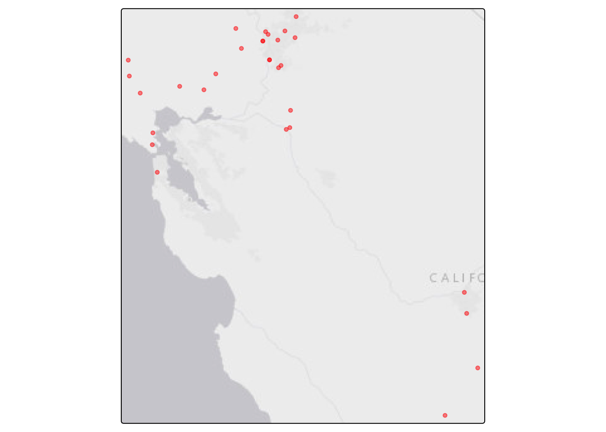
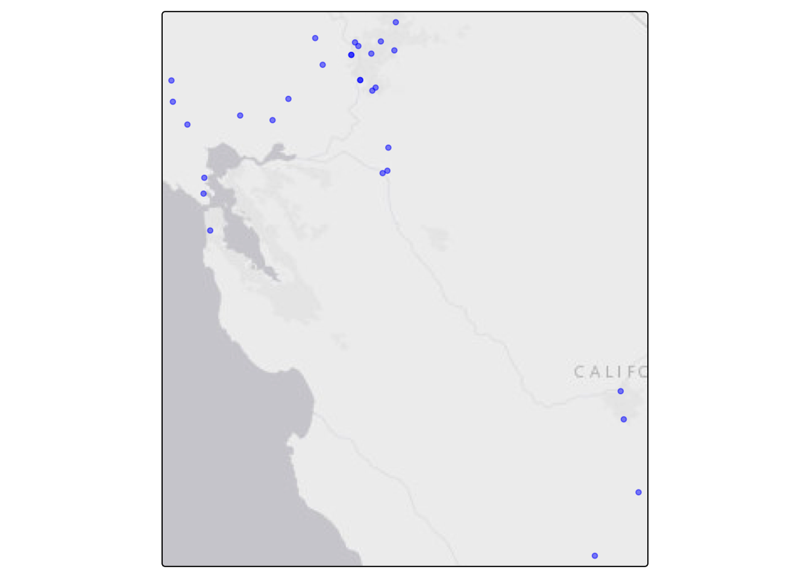
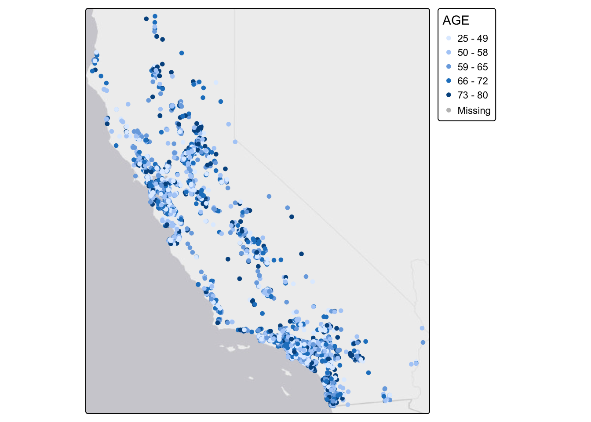
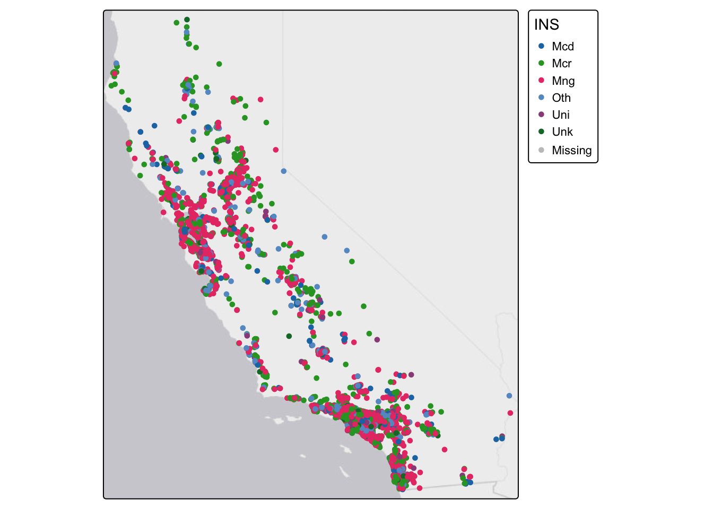
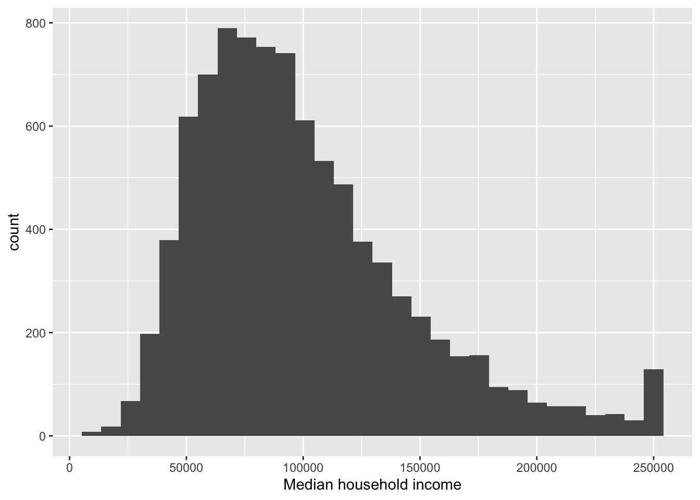
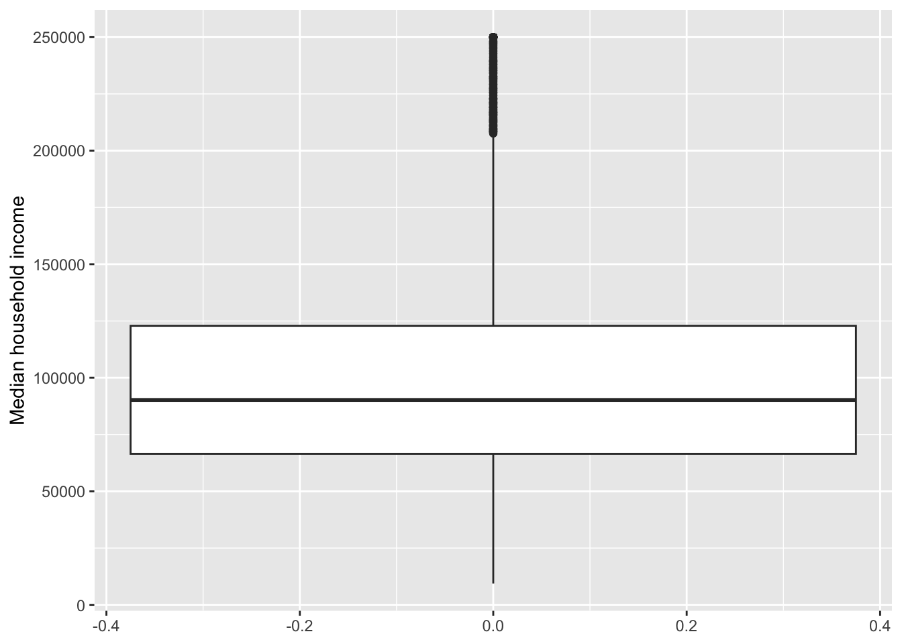

Load Packages
library(sf)
library(tidyverse)
library(tidygeocoder)
library(MapGAM)
library(tidycensus)
library(flextable)
library(tmap)
Question 1. Read in In N Out Burger
glimpse(innout)
download.file("https://raw.githubusercontent.com/pjames-ucdavis/SPH215/refs/heads/main/innout_final.csv", "innout_final.csv", mode = "wb")
in_n_out <- read_csv("innout_final.csv")## Rows: 30 Columns: 2
## ── Column specification ──────────────────────────────────────────────────────────────────────────────────────────────────
## Delimiter: ","
## chr (1): store address
## dbl (1): Store Number
##
## ℹ Use `spec()` to retrieve the full column specification for this data.
## ℹ Specify the column types or set `show_col_types = FALSE` to quiet this message.
Question 2. Glimpse at the data. Looks like store address is the variable to geocode!
glimpse(in_n_out)## Rows: 30
## Columns: 2
## $ `Store Number` <dbl> 131, 327, 276, 217, 225, 247, 320, 319, 197, 207, 143, 180, 308, 141, 89, 135, 126, 147, 165, 16…
## $ `store address` <chr> "3501 Truxel Road Sacramento CA 95834", "8200 Delta Shores Circle Sacramento CA 95832", "2001 Al…
Question 3. Geocode the data using “arcgis” geocoder.
innout_geo <- geocode(in_n_out, address = "store address",
method = "arcgis")## Passing 30 addresses to the ArcGIS single address geocoder## Query completed in: 12 seconds
Question 4. Looks like there’s no missingness! No NAs!
summary(innout_geo$lat)## Min. 1st Qu. Median Mean 3rd Qu. Max.
## 35.99 37.99 38.39 38.12 38.59 38.76summary(innout_geo$long)## Min. 1st Qu. Median Mean 3rd Qu. Max.
## -122.7 -122.0 -121.5 -121.5 -121.3 -119.7
Question 5. We use st_as_sf to make the dataset spatial and we use the crs of 4326
innout_pts <- st_as_sf(innout_geo, coords=c("long","lat"), crs=4326)
Question 6. Map the addreses in red below!
tmap_mode("plot")## ℹ tmap modes "plot" - "view"innout_map = tm_shape(innout_pts) + tm_dots(col = "red", size = 0.3, alpha = 0.5) + tm_basemap()##
## ── tmap v3 code detected ─────────────────────────────────────────────────────────────────────────────────────────────────
## [v3->v4] `tm_dots()`: use `fill_alpha` instead of `alpha`.innout_map
Question 7. Map the addreses in blue below!
tmap_mode("plot")## ℹ tmap modes "plot" - "view"innout_map_blue = tm_shape(innout_pts) + tm_dots(col = "blue", size = 0.3, alpha = 0.5) + tm_basemap()##
## ── tmap v3 code detected ─────────────────────────────────────────────────────────────────────────────────────────────────
## [v3->v4] `tm_dots()`: use `fill_alpha` instead of `alpha`.innout_map_blue
Question 8. Import CAdata dataset
#Load CAdata dataset from MapGAM package
data(CAdata)
ca_pts <- CAdata
summary(ca_pts)## time event X Y AGE INS
## Min. : 0.004068 Min. :0.0000 Min. :1811375 Min. :-241999 Min. :25.00 Mcd: 431
## 1st Qu.: 1.931247 1st Qu.:0.0000 1st Qu.:2018363 1st Qu.: -94700 1st Qu.:53.00 Mcr:1419
## Median : 4.749980 Median :1.0000 Median :2325084 Median : -60386 Median :62.00 Mng:2304
## Mean : 6.496130 Mean :0.6062 Mean :2230219 Mean : 87591 Mean :61.28 Oth: 526
## 3rd Qu.: 9.609031 3rd Qu.:1.0000 3rd Qu.:2380230 3rd Qu.: 318280 3rd Qu.:71.00 Uni: 168
## Max. :24.997764 Max. :1.0000 Max. :2705633 Max. : 770658 Max. :80.00 Unk: 152ca_pts <- st_as_sf(CAdata, coords=c("X","Y"))
Question 9. Add CRS
#Load the projection into an object called ca_proj
ca_proj <- "+proj=lcc +lat_1=40 +lat_2=41.66666666666666
+lat_0=39.33333333333334 +lon_0=-122 +x_0=2000000
+y_0=500000.0000000002 +ellps=GRS80
+datum=NAD83 +units=m +no_defs"
#Set CRS
ca_pts_crs <- st_set_crs(ca_pts, ca_proj)
Question 10. Create a map of the CAdata dataset with points color coded by quintiles of age.
cancer_map_age = tm_shape(ca_pts_crs) + tm_dots(col = "AGE", size = 0.3, style = "quantile") + tm_basemap()## ## ── tmap v3 code detected ─────────────────────────────────────────────────────────────────────────────────────────────────## [v3->v4] `tm_dots()`: instead of `style = "quantile"`, use fill.scale = `tm_scale_intervals()`.
## ℹ Migrate the argument(s) 'style' to 'tm_scale_intervals(<HERE>)'cancer_map_age
Question 11. Map by insurance status
cancer_map_ins = tm_shape(ca_pts_crs) + tm_dots(col = "INS", size = 0.3, style = "cat") + tm_basemap()## ## ── tmap v3 code detected ─────────────────────────────────────────────────────────────────────────────────────────────────## [v3->v4] `tm_dots()`: instead of `style = "cat"`, use fill.scale = `tm_scale_categorical()`.cancer_map_ins
Question 12. Use the tidycensus package to download American Community Survey Five year estimates from 2018-2022 in California at the Census tract level for the following variable
ca <- get_acs(geography = "tract",
year = 2022,
variables = c(medinc = "B19013_001"),
state = "CA",
survey = "acs5",
output = "wide")## Getting data from the 2018-2022 5-year ACS## Using FIPS code '06' for state 'CA'
Question 13. Take a glimpse at your data.
glimpse(ca)## Rows: 9,129
## Columns: 4
## $ GEOID <chr> "06001400100", "06001400200", "06001400300", "06001400400", "06001400500", "06001400600", "06001400700",…
## $ NAME <chr> "Census Tract 4001; Alameda County; California", "Census Tract 4002; Alameda County; California", "Censu…
## $ medincE <dbl> 234236, 225500, 164000, 158836, 95078, 155893, 110556, 97132, 114583, 153654, 93121, 115045, 104226, 950…
## $ medincM <dbl> 42845, 29169, 44675, 9038, 34125, 33824, 12318, 37490, 31849, 31601, 8351, 41439, 12036, 13183, 17441, 3…
Question 14. Give us the mean median household income across tracts in California.
ca %>%
summarize(Mean = mean(medincE))## # A tibble: 1 × 1
## Mean
## <dbl>
## 1 NA
Question 15. Make a table showing the mean, median, and standard deviation of median household income across tract in California, and make it look fancy!
summarytable <- ca %>%
summarize(Mean = mean(medincE),
Median = median(medincE),
SD = sd(medincE)
)
my_table <- flextable(summarytable)
my_tableMean | Median | SD |
|---|---|---|
Question 16. Create a histogram of median household income across tracts in California. Make sure it has a label.
ca %>%
ggplot() +
geom_histogram(mapping = aes(x=medincE)) +
xlab("Median household income")## `stat_bin()` using `bins = 30`. Pick better value `binwidth`.## Warning: Removed 141 rows containing non-finite outside the scale range (`stat_bin()`).
Question 17. OK now give me a boxplot! And I want a nice label for this too!
ca %>%
ggplot() +
geom_boxplot(mapping = aes(y = medincE)) +
ylab("Median household income")## Warning: Removed 141 rows containing non-finite outside the scale range (`stat_boxplot()`).